2 INTRODUÇÃO À VISUALIZAÇÃO DE DADOS NO R
Vivemos uma era em que dados se tornaram centrais para decisões em praticamente todas as áreas do conhecimento. Da saúde pública à economia, da ciência à política, da cultura ao meio ambiente — saber extrair sentido dos dados é hoje uma habilidade essencial. Porém, tão importante quanto analisar dados é comunicá-los de maneira clara, honesta e impactante. É nesse contexto que nasce a visualização de dados, uma ponte entre a complexidade dos números e a simplicidade necessária para a ação.
2.1 A IMPORTÂNCIA DA VISUALIZAÇÃO DE DADOS PARA A ANÁLISE EXPLORATÓRIA
Antes mesmo de aplicar modelos estatísticos ou algoritmos de aprendizado de máquina, analistas de dados recorrem à visualização para entender o que está acontecendo nos dados. A visualização é a lente que nos ajuda a enxergar padrões, detectar anomalias, identificar outliers, perceber relações entre variáveis e levantar hipóteses.
Ela nos permite responder a perguntas simples, porém fundamentais:
- Os dados têm valores ausentes ou inconsistentes?
- Há distribuição assimétrica? Outliers?
- As variáveis parecem correlacionadas? A relação é linear?
- Há diferenças marcantes entre grupos?
A visualização funciona como uma lupa estatística. Ao invés de navegar por longas tabelas ou sumários numéricos, é possível enxergar de imediato estruturas ocultas, agrupamentos, tendências ou até erros de coleta de dados. Isso torna o processo de modelagem mais eficiente e confiável.
2.1.1 UM EXEMPLO PRÁTICO
Imagine um pesquisador analisando a relação entre cobertura vacinal e mortalidade infantil nos municípios brasileiros. Antes de rodar modelos lineares ou calcular correlações, ele pode construir um gráfico de dispersão com a cobertura vacinal no eixo x e a mortalidade infantil no eixo y. Se houver uma tendência decrescente — isto é, quanto maior a vacinação, menor a mortalidade — isso já orienta o tipo de modelo a ser testado e ajuda a antecipar possíveis desafios (como heterocedasticidade ou efeitos não lineares).
Agora imagine que, nesse mesmo gráfico, aparece um ponto fora da curva: um município com altíssima cobertura vacinal, mas também alta mortalidade infantil. Isso acende um alerta. Será um erro de digitação? Uma peculiaridade local? Ou um efeito de confusão, como pobreza extrema ou falta de saneamento básico?
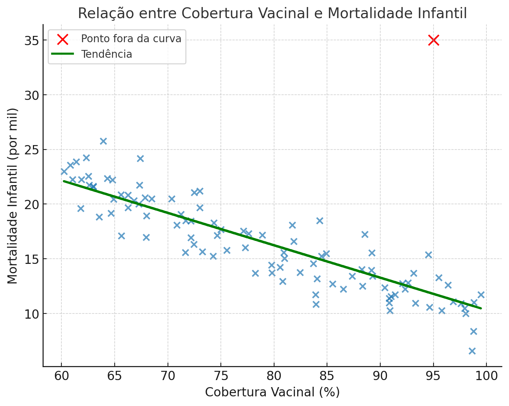
Esse tipo de questionamento só é possível quando visualizamos os dados.
2.2 PRINCÍPIOS DE DESIGN E BOAS PRÁTICAS NA COMUNICAÇÃO
Nem todo gráfico é útil. Muitos gráficos são bonitos, mas enganosos. Outros são corretos, mas ilegíveis ou desorganizados. Uma boa visualização exige equilíbrio entre clareza, precisão e estética. O objetivo não é apenas embelezar os dados, mas facilitar a compreensão e promover a confiança na análise apresentada.
A visualização de dados é uma forma de linguagem visual. Como toda linguagem, ela tem gramática, vocabulário e até sotaques. Um gráfico pode ser direto e objetivo, ou pode ser ambíguo e confuso. Portanto, dominar os princípios de design é essencial para comunicar com eficácia.
2.2.1 BOAS PRÁTICAS FUNDAMENTAIS
Reduza a complexidade sem perder a informação
Gráficos poluídos com muitos elementos visuais — grades, rótulos redundantes, legendas excessivas, decorações desnecessárias — confundem mais do que esclarecem. Simplifique o que puder, mas sem sacrificar o conteúdo.Use cores com parcimônia e propósito
A cor é uma ferramenta poderosa, mas deve ser usada com intenção. Evite paletas chamativas ou sem contraste. Atenção especial para convenções culturais — por exemplo, vermelho pode significar alerta, perda ou erro.Escolha a geometria certa para cada tipo de variável
Cada tipo de dado exige uma forma apropriada de ser mostrado. Evite gráficos de pizza para comparações precisas, prefira barras horizontais para categorias com nomes longos, e use linhas para evoluções temporais. Um erro comum é usar formas bonitas, mas pouco eficazes.Conte uma história com seus dados
Um bom gráfico tem foco. Ele guia o olhar para o que importa e antecipa a pergunta que o leitor vai fazer. Títulos informativos, destaques visuais e organização do espaço ajudam o gráfico a “falar” por si mesmo.Respeite a integridade dos dados
Nunca distorça escalas, oculte contextos ou manipule eixos para forçar uma narrativa. A responsabilidade ética do comunicador de dados inclui não enganar o leitor.Pense na acessibilidade
Lembre-se de quem vai ver o gráfico: ele pode ser lido em um celular, impresso em preto e branco, ou acessado por pessoas com deficiências visuais. Textos legíveis, contrastes adequados e descrições alternativas são parte do bom design.
2.2.2 EXEMPLOS DE GRÁFICOS ENGANADORES
À seguir, seguem alguns gráficos enganadores. Você consegue descobrir o que está de errado em cada gráfico?
Exemplo 1
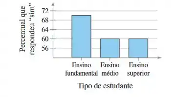
Exemplo 2
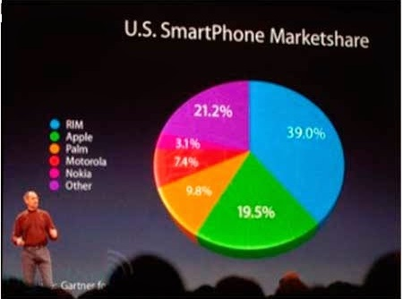
Exemplo 3
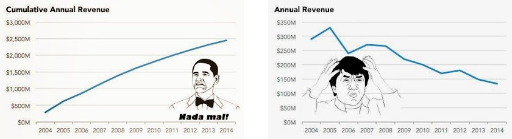
Exemplo 4

2.3 TIPOS DE DADOS E SUA REPRESENTAÇÃO GRÁFICA
Antes de decidir qual gráfico construir, precisamos entender com que tipo de dado estamos lidando. Isso porque a tipologia dos dados determina quais formas visuais fazem sentido e garantem clareza interpretativa.
A escolha correta da visualização não é apenas uma questão de gosto, mas de coerência com a natureza da variável. Usar o gráfico errado pode levar à má interpretação dos dados ou até mesmo esconder padrões relevantes.
2.3.1 VARIÁVEIS QUALITATIVAS
São aquelas que indicam categorias ou rótulos, com ou sem uma ordem intrínseca.
Exemplos: sexo, região do país, tipo de crime, partido político, escolaridade, faixa etária ou renda.
Gráficos adequados:
- Gráfico de barras.
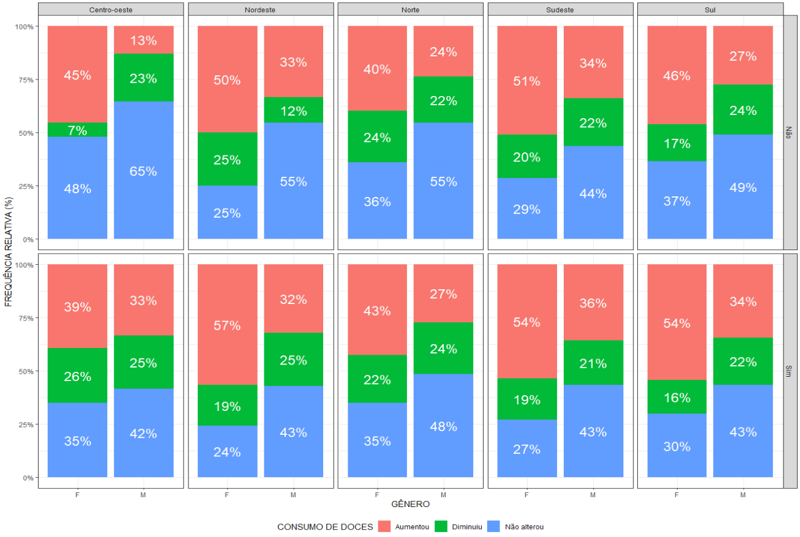
- Gráfico de mosaico.
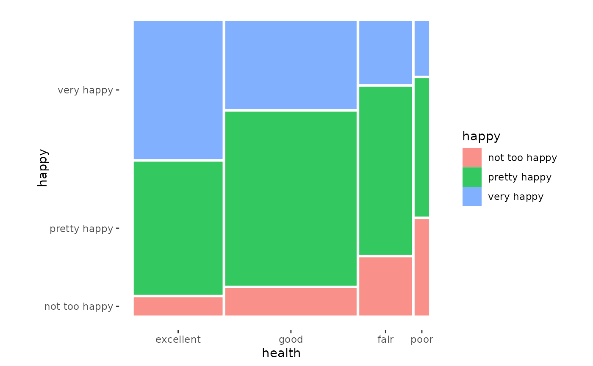
- Gráfico de pizza (donut).
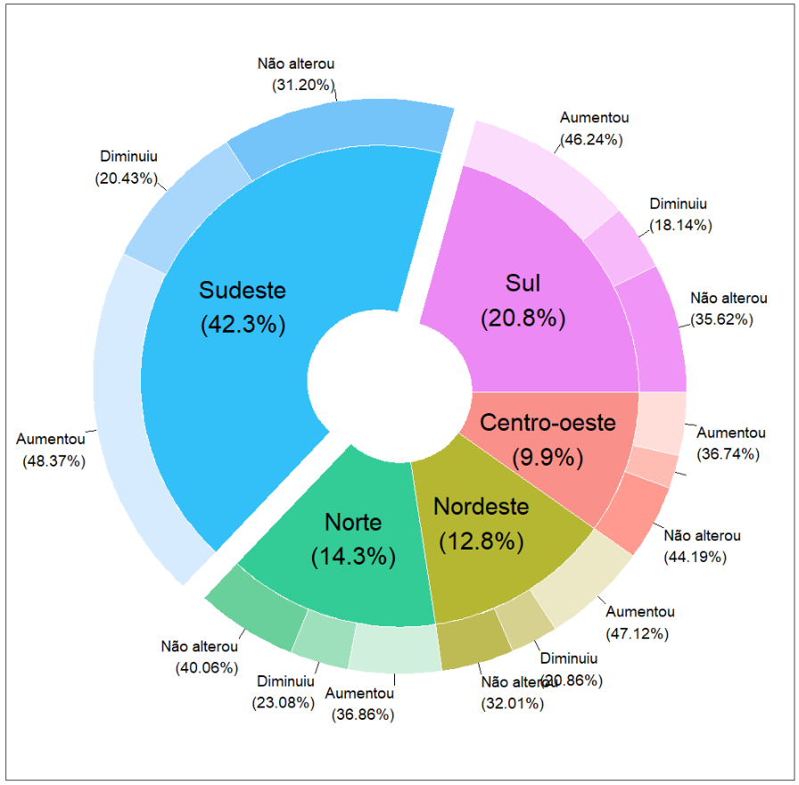
- Diagrama de Pareto.
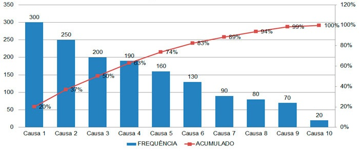
2.3.2 VARIÁVEIS QUANTITATIVAS
Podem assumir valores em uma escala contínua ou discreta, e permitem operações aritméticas.
Exemplos: idade, altura, renda, temperatura, PIB per capita.
Gráficos adequados:
- Histogramas
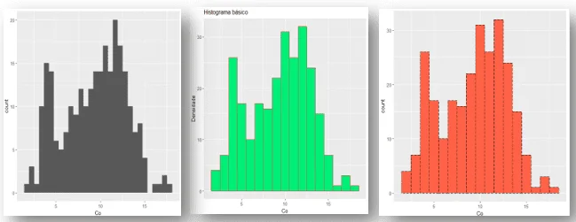
- Boxplots
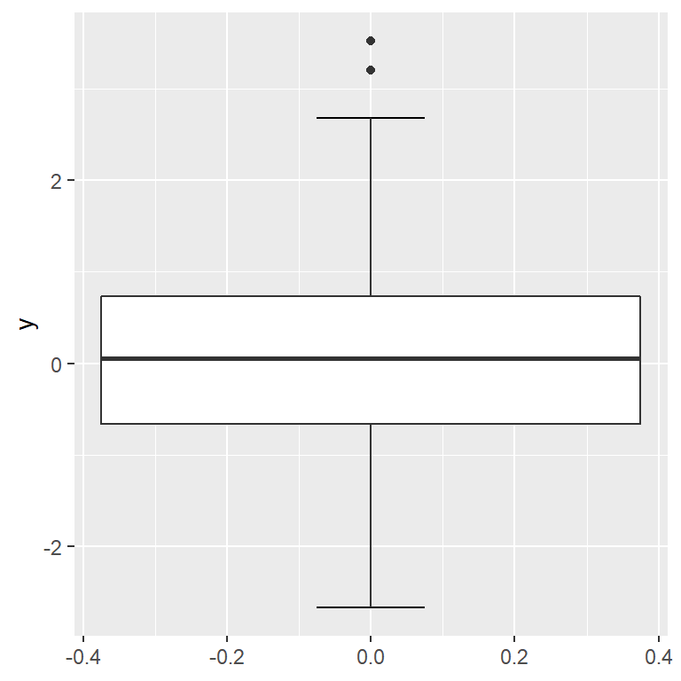
- Gráficos de linha
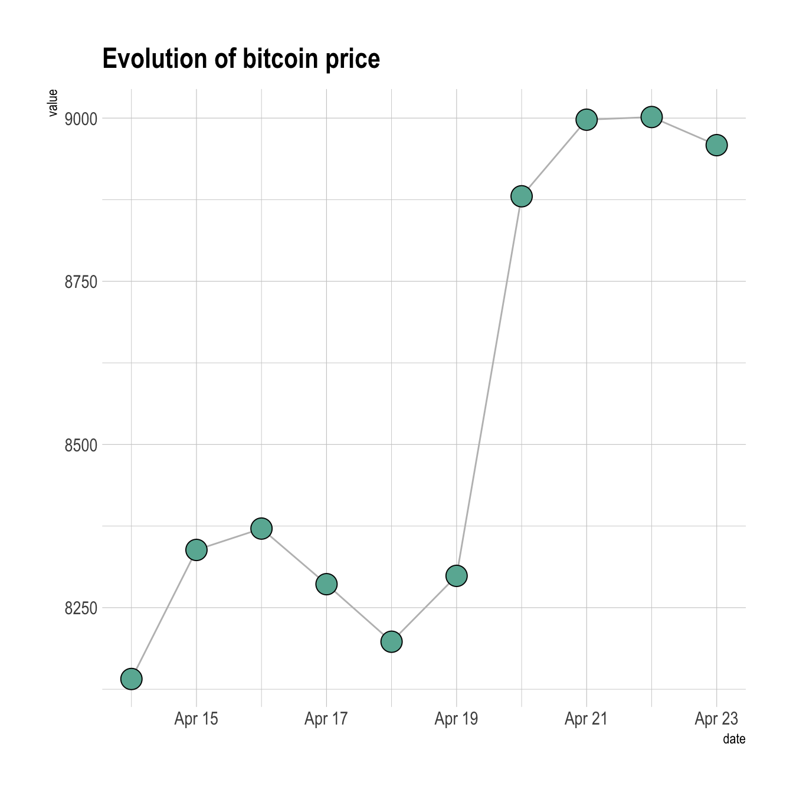
- Gráficos de dispersão (scatterplots)
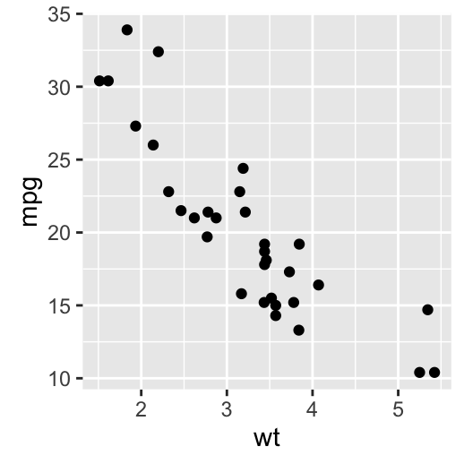
- Densidades
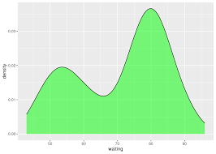
2.3.3 COMBINANDO VARIÁVEIS QUALITATIVAS COM QUANTITATIVAS
É muito comum a análise de uma variável quantitativa dentro de diferentes categorias de uma ou mais variáveis qualitativas. Nesse caso, todos os gráficos vistos anteriormente para as variáveis quantitativas serão revisitados para acomodarem a separação por grupos.
Quando inserimos uma variável qualitativa na análise, conseguimos comparar distribuições, tendências e padrões entre diferentes categorias, o que muitas vezes revela nuances que ficariam ocultas em uma análise global.
Além dessas visualizações, veremos também os seguintes gráficos:
- Heatmap
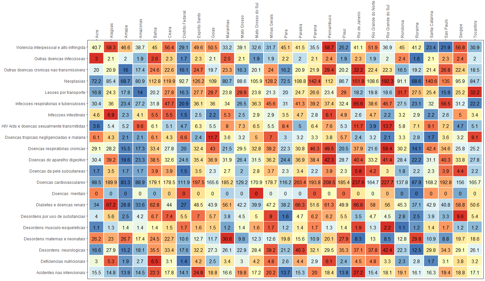
- Área
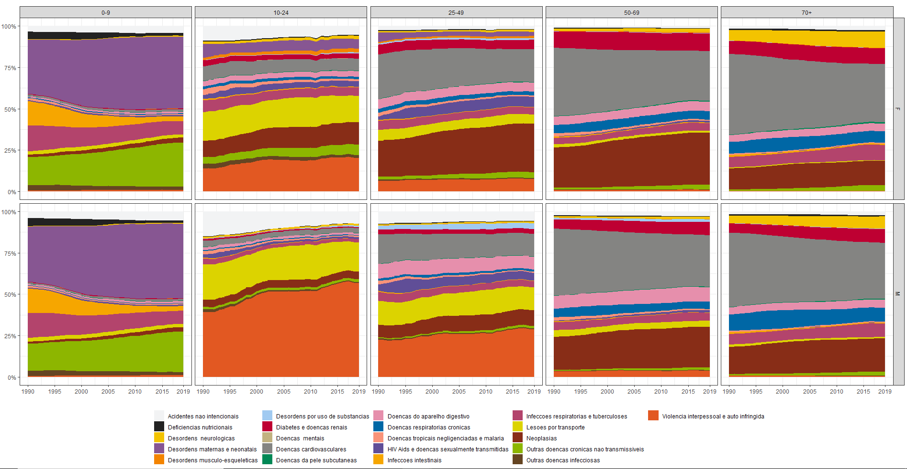
- Pirâmide
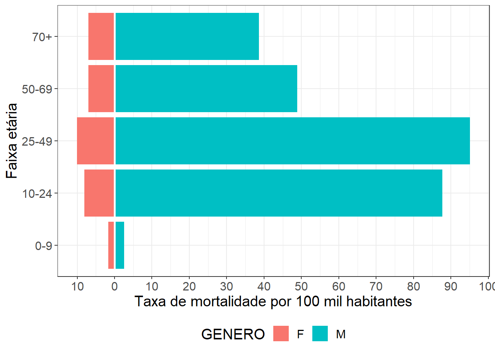
2.3.4 DADOS ESPACIAIS
São dados associados a localizações geográficas.
Exemplos: taxa de homicídio por município, acesso à internet por região, desmatamento por estado.
Gráfico adequado: - Mapas coropléticos
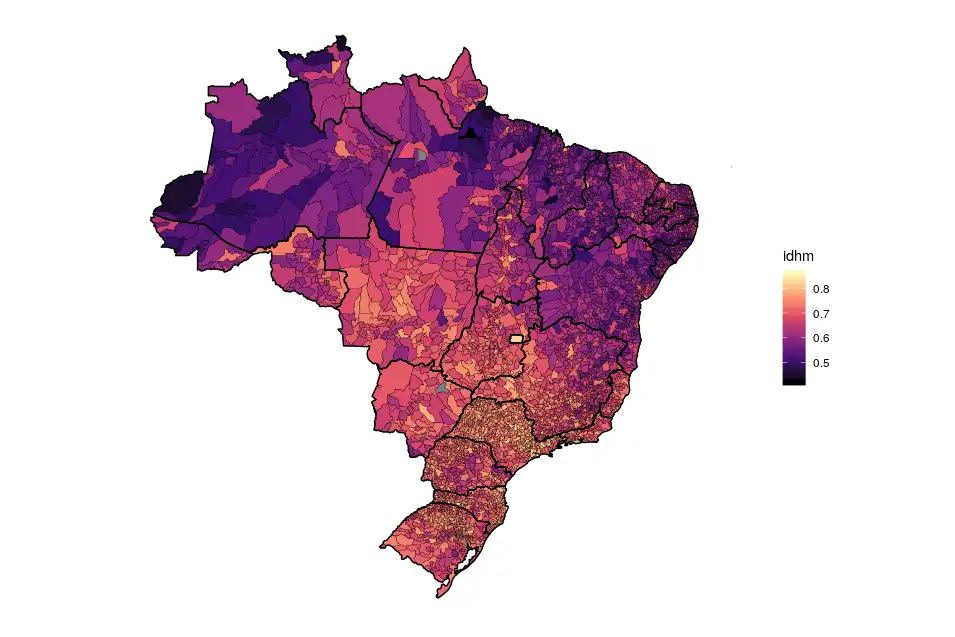
2.3.5 DADOS TEXTUAIS
São dados em linguagem natural que precisam ser processados antes da visualização.
Exemplos: respostas abertas de questionários, discursos políticos, manchetes de jornais.
Gráfico adequado:
- Nuvens de palavras
2.3.6 VISUALIZAÇÕES INTERATIVAS E DASHBOARDS
Com o avanço das ferramentas em R (como plotly, leaflet, shiny, highcharter, echarts4r), hoje podemos criar visualizações interativas que permitem ao usuário:
- Filtrar variáveis
- Explorar séries temporais em tempo real
- Visualizar dados espaciais com zoom
- Construir dashboards completos com múltiplas visualizações conectadas
Esses recursos são valiosos principalmente quando há grande volume de dados ou múltiplas dimensões. Eles empoderam o público ao permitir uma exploração autônoma e personalizada das informações.
Exemplo 1:
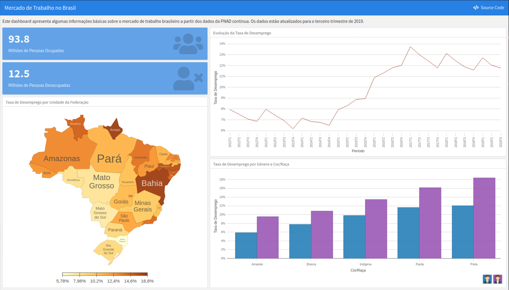
Exemplo 2:
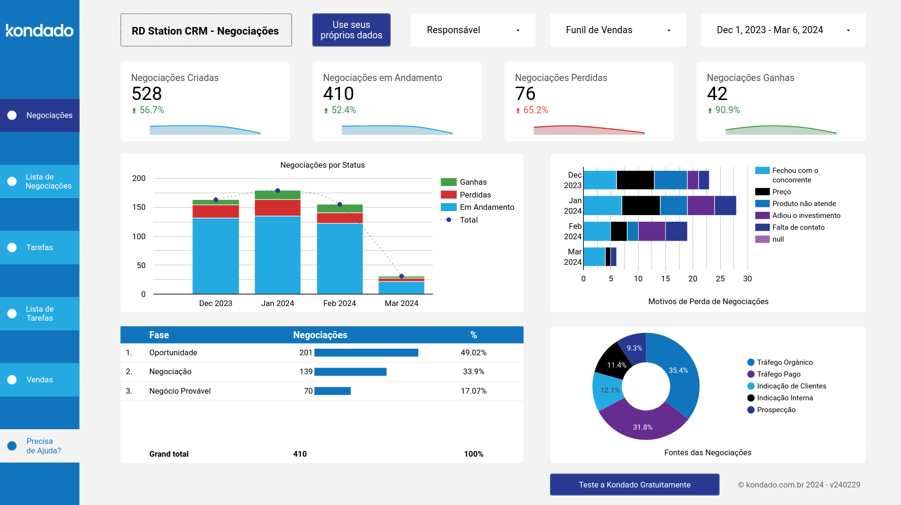
2.4 FONTES DE DADOS E A LEI DE ACESSO À INFORMALÇAO
Uma visualização de dados só é possível quando temos acesso a dados confiáveis, organizados e atualizados. Felizmente, o Brasil avançou muito nesse aspecto nas últimas décadas, especialmente após a promulgação da Lei de Acesso à Informação (LAI, Lei nº 12.527/2011).
A LAI estabelece que informações de interesse coletivo ou geral devem ser disponibilizadas por órgãos públicos, promovendo maior transparência, cidadania e controle social. Desde então, muitos órgãos passaram a publicar seus dados em formatos acessíveis e reutilizáveis — o que favorece enormemente o trabalho de analistas, jornalistas, pesquisadores e desenvolvedores.
2.4.1 POR QUE ISSO IMPORTA PARA A VISUALIZAÇÃO DE DADOS
Sem dados públicos acessíveis, muitas análises e gráficos simplesmente não seriam possíveis. O acesso livre permite, por exemplo:
- Monitorar políticas públicas;
- Detectar desigualdades regionais;
- Investigar tendências ao longo do tempo;
- Desenvolver dashboards e relatórios dinâmicos;
- Conectar dados de diferentes fontes.
2.4.2 FONTES FUNDAMENTAIS DE DADOS PÚBLICOS NO BRASIL
A seguir, destacamos algumas das fontes mais relevantes que você pode explorar:
🔍 IBGE: Instituto Brasileiro de Geografia e Estatística
Principais bases: Censo Demográfico, PNAD Contínua, SIDRA, Contas Regionais.🏥 DATASUS: Departamento de Informática do SUS
Principais bases: SIH/SUS (internações), SIM (mortalidade), SINASC (nascimentos), e-SUS.📈 IPEA Data: Instituto de Pesquisa Econômica Aplicada
Indicadores: sociais, econômicos, de infraestrutura e desenvolvimento.📂 Portal Brasileiro de Dados Abertos
Plataforma que reúne bases de dados de diversos ministérios e órgãos federais.🗳 TSE
Dados eleitorais: resultados, filiações, prestação de contas, perfil dos candidatos e eleitores.🌱 INPE: Instituto Nacional de Pesquisas Espaciais
Monitoramento ambiental: desmatamento (PRODES), queimadas, imagens de satélite.
2.4.3 FERRAMENTAS EM R PARA ACESSAR ESSES DADOS
A linguagem R conta com vários pacotes que facilitam o acesso, limpeza e visualização dessas fontes:
2.4.3.1 📦 sidrar
- Descrição: Facilita o acesso aos dados agregados do SIDRA (Sistema IBGE de Recuperação Automática).
- Documentação: CRAN sidrar
2.4.3.2 📦 geobr
- Descrição: Fornece acesso a malhas territoriais oficiais do Brasil em formato compatível com
sf.
- Documentação: CRAN geobr
2.4.3.3 📦 cepespR
- Descrição: Permite acessar dados eleitorais do TSE via API do CepespData, abrangendo eleições desde 1998.
- Documentação: GitHub cepespR
2.4.3.4 📦 microdatasus
- Descrição: Facilita o download e pré-processamento de microdados de saúde do DATASUS.
- Documentação: GitHub microdatasus
2.4.3.5 📦 capesR
- Descrição: Permite acessar o catálogo de teses e dissertações da CAPES (1987-2022).
- Documentação: CRAN capesR
2.4.3.6 📦 geocodebr
- Descrição: Utiliza o Cadastro Nacional de Endereços para geolocalizar dados no Brasil.
- Documentação: CRAN geocodebr
2.4.3.7 📦 brverse
- Descrição: Coleção de pacotes R focados em dados brasileiros de economia, finanças, meio ambiente, segurança, entre outros.
- Documentação: GitHub brverse
Dica: verifique sempre a documentação!